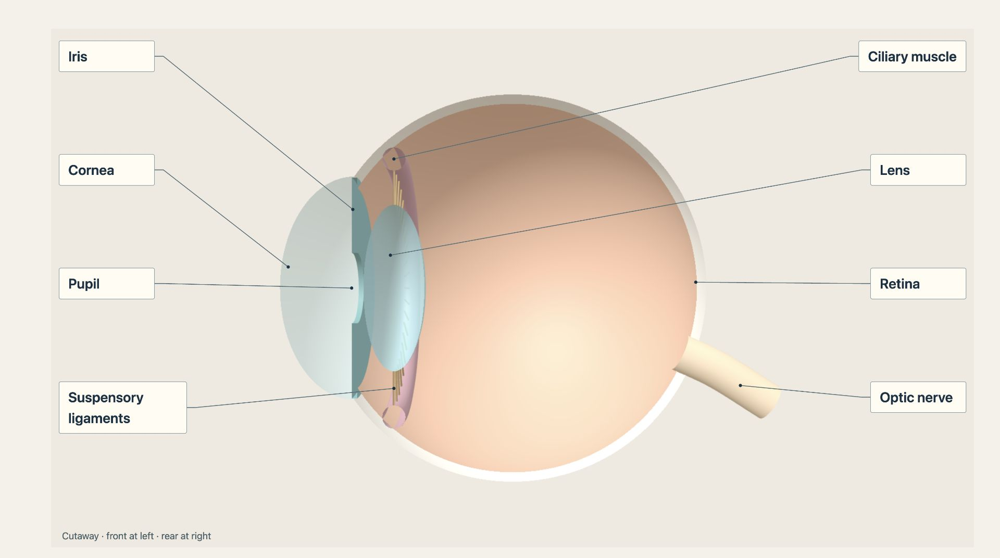

Year 8 science / Light and sight
Inside the eye
Drag the eye to rotate. Scroll to zoom. Select a label to explain its job.

Labelled cutaway of this model. Use 3D to change the viewing angle, light level or lens shape.
Cutaway · front at left · rear at right
Trace, explain, check
Select a label to read its job. Before changing the light level, predict which opening will change.
Normal light: a medium pupil opening.
Structure list and model limits
This is a teaching model, with simplified proportions and colours. The cutaway removes tissue to reveal the inside; a real eye is enclosed. The pupil is a hole in the iris. Brightness changes the opening, not the size of the eye or lens. Light paths are schematic, not a numerical optical simulation. Near and distant settings illustrate accommodation. Light-level and focusing controls are separated to distinguish their mechanisms; the real near response also includes pupil constriction. The model does not demonstrate image inversion or every tissue layer.
Scientific checks: National Eye Institute: how eyes work. Model: Edu OS. Three.js r149, MIT licence.